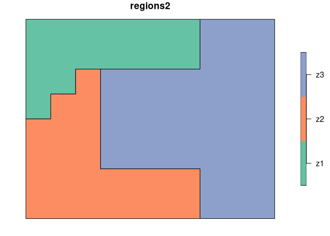
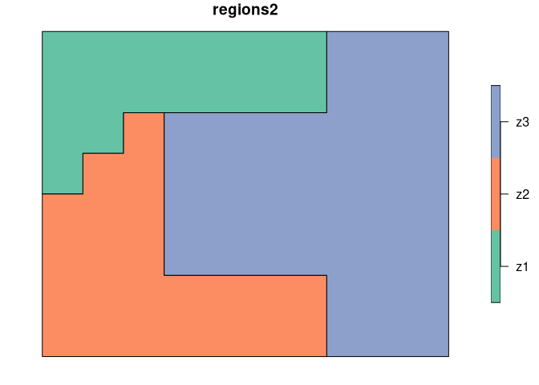
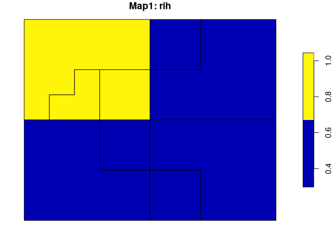
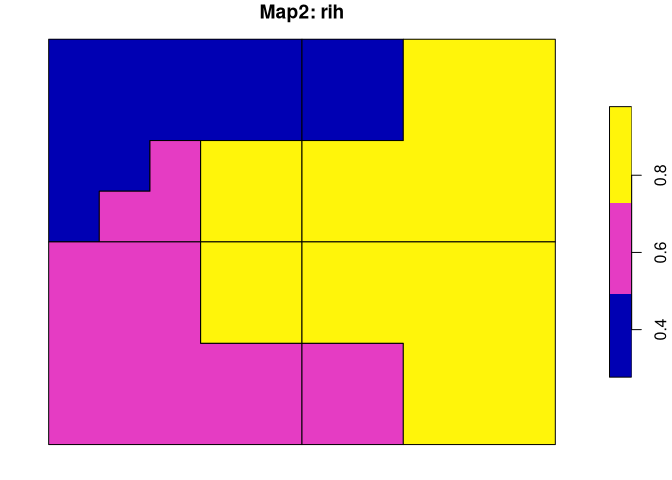

The sabre (Spatial Association Between REgionalizations) is an R package for calculating a degree of spatial association between regionalizations or categorical maps. This package offers support for sf, RasterLayer, SpatRaster, and stars spatial objects, and the following methods:
- the V-measure method (Nowosad and Stepinski, 2018)
- the MapCurve method (Hargrove et al., 2006)
Installation
You can install the released version of sabre from CRAN with:
install.packages("sabre")You can install the development version from GitHub with:
# install.packages("devtools")
devtools::install_github("Nowosad/sabre")Example
We use two simple regionalization, regions1 and regions2 to show the basic concept of calculating a degree of spatial association.
The first map, regions1 consists of four regions of the same shape and size, while the second one, regions2 has three irregular regions.
 

The vmeasure_calc() function allows for calculation of a degree of spatial association between regionalizations or categorical maps using the information-theoretical V-measure. It requires, at least, four arguments:
-
x- ansfobject containing the first regionalization -
x_name- a name of the column with regions names of the first regionalization -
y- ansfobject containing the second regionalization -
y_name- a name of the column with regions names of the second regionalization
regions_vm = vmeasure_calc(x = regions1, y = regions2, x_name = z, y_name = z)The result is a list with three metrics of spatial association - V-measure, Homogeneity, Completeness - and two sf objects with preprocessed input maps - $map1 and $map2.
regions_vm
#> The SABRE results:
#>
#> V-measure: 0.36
#> Homogeneity: 0.32
#> Completeness: 0.42
#>
#> The spatial objects can be retrieved with:
#> $map1 - the first map
#> $map2 - the second mapBoth spatial outputs have two columns. The first one contains regions’ names/values and the second one (rih) describes regions’ inhomogeneities.

More examples can be found in the package vignette and in the sabre: or how to compare two maps? blog post.
Logo
Hex logo was created with hexmake using icons made by Smashicons and Creaticca Creative Agency from www.flaticon.com.
References
- Nowosad, Jakub, and Tomasz F. Stepinski. “Spatial association between regionalizations using the information-theoretical V-measure.” International Journal of Geographical Information Science (2018). https://doi.org/10.1080/13658816.2018.1511794
- Rosenberg, Andrew, and Julia Hirschberg. “V-measure: A conditional entropy-based external cluster evaluation measure.” Proceedings of the 2007 joint conference on empirical methods in natural language processing and computational natural language learning (EMNLP-CoNLL).
- Hargrove, William W., Forrest M. Hoffman, and Paul F. Hessburg. “Mapcurves: a quantitative method for comparing categorical maps.” Journal of Geographical Systems 8.2 (2006): 187.